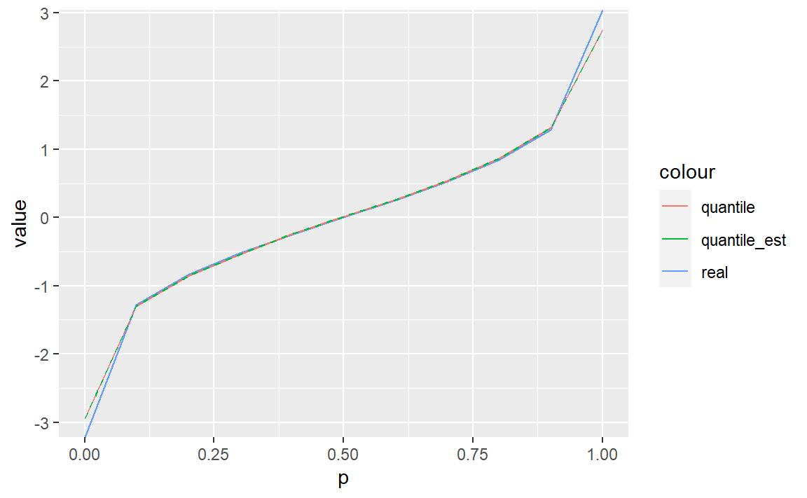

2 概括统计量
library(tidyverse)
#> -- Attaching packages ----- tidyverse 1.3.0 --
#> √ ggplot2 3.3.2 √ dplyr 1.0.2
#> √ tibble 3.0.3 √ stringr 1.4.0
#> √ tidyr 1.1.1 √ forcats 0.5.0
#> √ readr 1.3.1
#> -- Conflicts -------- tidyverse_conflicts() --
#> x dplyr::filter() masks stats::filter()
#> x dplyr::lag() masks stats::lag()2.1 习题
习题1
解：
skewness <- function(x)
{
n <- length(x)
y <- (x-mean(x))/sd(x)
phi <- n*sum(y^3)/(n-1)/(n-2)
phi
}测试：
x <- c(8.75, 10.37, 8.33, 13.19, 10.66, 8.36, 10.97, 11.48, 11.15, 9.39)
skewness(x)
#> [1] 0.3516643习题2
解：
定义函数：
quantile_est <- function(x, p)
{
p <- as.double(p)
if(p<0 | p>1) stop("The 'p' is out of [0,1].")
else if(p==0) xp <- min(x)
else if(p==1) xp <- max(x)
else{
n <- length(x)
t <- table(x)
r <- as.double(names(t))
i <- floor(p*(n+1/3)+1/3) # xq左侧的x(i)
j <- i+t[names(t)==r[i]] # xq右侧x(j)
k <- (j-i)/(n+1/3)/(r[i+1]-r[i])
xp <- p-(i-1/3)/(n+1/3)+k*r[i]
xp <- xp/k
}
names(xp) <- p
xp
}与quantile()以及真实分位数的比较：
x <- rnorm(1000)
tbl <- tibble(p = seq(0,1,by = 0.1))
tbl["real"] <- qnorm(tbl$p)
tbl["quantile"] <- quantile(x,tbl$p)
tbl["quantile_est"] <- map_dbl(tbl$p,quantile_est,x=x)
tbl %>%
ggplot(aes(x=p))+
geom_line(aes(y=real,color="real"))+
geom_line(aes(y=quantile,color="quantile"))+
geom_line(aes(y=quantile_est,color="quantile_est"),linetype=2)+
ylab("value")
可以看到，自定义函数跟quantile()函数得到的值重合度非常高，与真实分位数也差别不大。
习题3
解：
3.2.1
证明： \[ \bar{x}_n = \frac1n\sum_{i=1}^nx_i=\frac{n-1}n\times\frac{\sum_{i=1}^{n-1}x_i}{n-1}+\frac{x_n}n=\frac{n-1}n\bar{x}_{n-1}+\frac{x_n}n \]
3.2.2
证明： \[ \begin{align} (n-1)S_n^2 &= \sum_{i=1}^n(x_i-\bar x_n)^2\\ &= \sum_{i=1}^n(x_i-\bar x_{n-1}+\bar x_{n-1}-\bar x_n)^2\\ &= \sum_{i=1}^n(x_i-\bar x_{n-1})^2+2(\bar x_{n-1}-\bar x_n)\sum_{i=1}^n(x_i-\bar x_{n-1})+\sum_{i=1}^n(\bar x_{n-1}-\bar x_n)^2\\ &= (n-2)S_{n-1}^2+(x_n-\bar x_{n-1})^2-2n(\bar x_n-\bar x_{n-1})^2+n(\bar x_{n-1}-\bar x_n)^2\\ &= (n-2)S_{n-1}^2+(x_n-\bar x_{n-1})^2-n(\bar x_n-\bar x_{n-1})^2\\ &= (n-2)S_{n-1}^2+(x_n-\bar x_{n-1})^2-n(\frac{x_n}{n}-\frac{\bar x_{n-1}}{n})^2\\ &= (n-2)S_{n-1}^2+(x_n-\bar x_{n-1})^2-\frac1n(x_n-\bar x_{n-1})^2\\ &= (n-2)S_{n-1}^2+\frac{n-1}n(x_n-\bar x_{n-1})^2 \end{align} \] 从而： \[ S_n^2 = \frac{n-2}{n-1}S_{n-1}^2+\frac{1}n(x_n-\bar x_{n-1})^2 \]
习题4
解：
求均值的递推公式一样，直接向量化运算就行.
求协方差的递推算法跟求方差类似：
由于 \[ \Sigma_n = \frac{1}{n-1}\sum_{i=1}^n(x_i-\bar x_n)(x_i-\bar x_n)^T \]
从而： \[ \begin{align} (n-1)\Sigma_n &= \sum_{i=1}^n(x_i-\bar x_n)(x_i-\bar x_n)^T\\ &= \sum_{i=1}^n(x_i-\bar x_{n-1}+\bar x_{n-1}-\bar x_n)(x_i-\bar x_{n-1}-\bar x_{n-1}+\bar x_n)^T\\ &= (n-2)\Sigma_{n-1}+\frac{n-1}{n}(x_n-\bar x_{n-1})(x_n-\bar x_{n-1})^T \end{align} \] 即 \[ \Sigma_n = \frac{n-2}{n-1}\Sigma_{n-1}+\frac{1}{n}(x_n-\bar x_{n-1})(x_n-\bar x_{n-1})^T \]